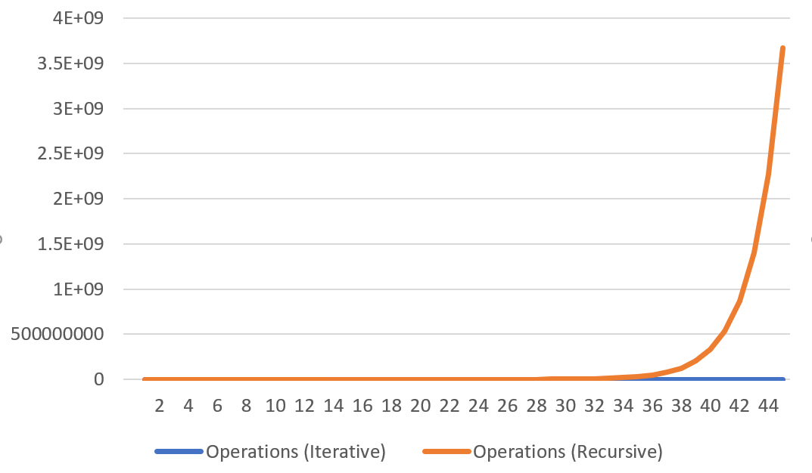

fibonacci.c
Contents
The fibonacci function is a great (or horrible) way to demonstrate the pros and cons of iterative and recursive approaches
Approaches
Iterative
unsigned long int fib(unsigned long int n) { int prev1 = 0; int prev2 = 1; for (int i = 0; i < n; i++) { int tmp = prev1; prev1 = prev2; prev2 += tmp; } return prev1; }
Recursive
unsigned long int fib(unsigned long int n) {
switch (n) {
case 0: return 0;
case 1: return 1;
default: return fib(n-1) + fib(n-2);
}
Spot an issue?
fib(5) = fib(4) + fib(3)
fib(4) = fib(3) + fib(2)
fib(3) = fib(2) + fib(1)
fib(2) = fib(1) + fib(0)
fib(1) = 1
fib(0) = 0
fib(5) = [ fib(4) ] + fib(3)
= [ fib(3) + fib(2) ] + fib(3)
Let’s call fib(5)…
fib(5) = fib(4) + fib(3)
= fib(3) + fib(2) + fib(3)
// ^ ^
// See an issue? We're going to call `fib(3)` twice
= fib(2) + fib(1) + fib(2) + fib(2) + fib(1)
// ^ ^ ^ `
// And `fib(2)` is going to be called three times!
fib(5) will eventually end up doing something like:
fib(5) = fib(1) + fib(0) + fib(1) + fib(1) + fib(0) + fib(1) + fib(0) + fib(1)
(more than) 8 operations for something that should only need 5…
Let’s blow up this execution
fib(5) = fib(4) + fib(3)
fib(4) = fib(3) + + fib(2) fib(3) = fib(2) + fib(1)
fib(3) = fib(2) + fib(1) fib(2) = fib(1) + fib(0) fib(2) = fib(1) + fib(0) fib(1) = 1
fib(2) = fib(1) + fib(0) fib(1) = 1 fib(1) = 1 fib(0) = 0 fib(1) = 1 fib(0) = 0
fib(1) = 1 fib(0) = 0 = 1 = 1
= 1 = 2
= 2
= 3
= 5
15 executions of fib(), to what only needed 5?
Performance
Let’s compare the two approaches
Iterative
n|fib|Operations (Iterative)|Operations (Recursive) -|-|-|- 1|1|1|1 2|1|2|3 3|2|3|5 4|3|4|9 5|5|5|15 6|8|6|25 7|13|7|41 8|21|8|67 9|34|9|109 10|55|10|177 11|89|11|287 12|144|12|465 13|233|13|753 14|377|14|1219 15|610|15|1973 16|987|16|3193 17|1597|17|5167 18|2584|18|8361 19|4181|19|13529 20|6765|20|21891 21|10946|21|35421 22|17711|22|57313 23|28657|23|92735 24|46368|24|150049 25|75025|25|242785 26|121393|26|392835 27|196418|27|635621 28|317811|28|1028457 29|514229|29|1664079 30|832040|30|2692537 31|1346269|31|4356617 32|2178309|32|7049155 33|3524578|33|11405773 34|5702887|34|18454929 35|9227465|35|29860703 36|14930352|36|48315633 37|24157817|37|78176337 38|39088169|38|126491971 39|63245986|39|204668309 40|102334155|40|331160281 41|165580141|41|535828591 42|267914296|42|866988873 43|433494437|43|1402817465 44|701408733|44|2269806339 45|1134903170|45|3672623805

As the Fibonacci sequence gets larger, the number of iterative operations increase constantly, whilst the number ofrecursive operations increase exponentially.. that’s bad..
Well, ops(n) = ops(n-1) + ops(n-2) + 1
So the 46th Fibonacci number will take 2269806339 + 3672623805 + 1 = 5942430145 operations
So, iterative and recursive approaches have their advantages.
Optimisation - Multiple Calls
If we need to get several Fibonacci numbers, it might be worthwhile to cache all of the results.
#include <stdlib.h>
struct fibonacci {
unsigned long int size;
unsigned long int *items;
};
struct fibonacci fibonacci = {
.size = 0,
.items = NULL
};
unsigned long int ulint_max(unsigned long int a, unsigned long int b) {
return a > b ? a : b;
}
unsigned long int fib(unsigned long int n) {
if (n == 0) {
return 0;
}
if (n > fibonacci.size) {
int init = fibonacci.items == NULL;
unsigned long int oldSize = ulint_max(fibonacci.size, 2);
fibonacci.items = realloc(fibonacci.items, sizeof(unsigned long int) * ulint_max(n, 2));
if (init) {
fibonacci.items[0] = 1;
fibonacci.items[1] = 1;
fibonacci.size = 2;
}
for (unsigned long int i = oldSize; i < n; i++) {
fibonacci.items[i] = fibonacci.items[i - 1] + fibonacci.items[i - 2];
}
fibonacci.size = n;
}
return fibonacci.items[n - 1];
}
// Don't forget to call `free(fibonacci.items);`
Generating 100000 Fibonacci numbers…
With the caching approach, we get incredibly fast times! type |time —–|——– real |0m0.006s user |0m0.006s sys |0m0.000s
As opposed to the standard iterative (non-caching) approach
type |time
—–|——–
real | 0m7.464s
user | 0m7.454s
sys | 0m0.000s
As for the recursive approach, we get no way close the performance of the iterative approaches…
Generating just 50 Fibonacci numbers (0.05%) takes forever.
type |time
—–|——–
real | 6m39.595s
user | 6m38.480s
sys | 0m0.001s
So, yes -the iterative approach is MUCH better.
Although we do use way more memory - these days, it’s not that bad…
> … as long as it’s not a memory leak.